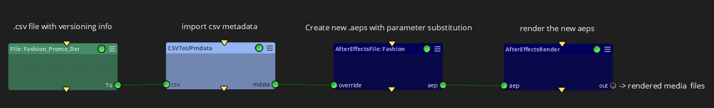
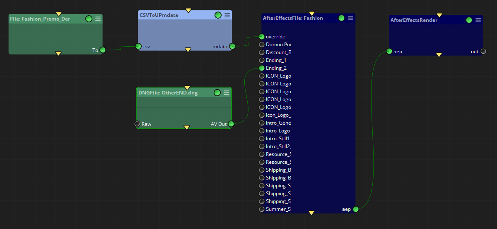

|
<< Click to Display Table of Contents >> After Effects File |
This node imports an After Effects .aep file and overrides selected parameter values with the metadata received trough the override input connector. New.aep files are created for each set of new parameter values (the original .aep file is considered a template and it is left untouched).
It can also substitute media files used in the After Effects composition, both manually and automatically.
The .aep parameter substitution is made at execution time, then sending the paths to the new .aep files trough the aep output connector (for example to an After Effects Render node for final rendering).
The substitution metadata given trough the override input connector has to come in UP (Universal Path) format, so you first need a specialized node to import your substitution metadata. An easy way to do this is to use a CSVtoUpMetadata node, which can parse a.csv file containing a new set of parameter values per line, then creating one UP for each line of the .csv to be passed to this node.
A first .csv file can be created by selecting the desired parameters in After Effects and using the WF Create CSV From Selection script.
The next picture illustrates the above workflow:

And here it is the step by step process:
1 - In After Effects, select all the parameters you want to substitute for each new version and click File -> Scripts -> WF Create CSV From Selection.jsx , which will export a reference.csv file with those parameters.
Note: The WF Create CSV From Selection.jsx script is configured by the Mistika Workflows installer, so make sure to install After Effects before installing Mistika Workflows (otherwise reinstall Mistika Workflows afterward's).
The next example correspond to a commercial with one video and one text overlay (simplified version of a video tutorial). We have selected both layers in After Effects and created this .csv file:
Output |
Fashion_Main.Ending_1.media |
Discount.Discount_Value.ADBE Text Properties.ADBE Text Document |
Discount.Discount_Value.ADBE Text Properties.ADBE Text Document.font |
C:/Renders/Fashion_Promo_WOMAN_ENG.mp4 |
E:/Media/Women/Rushes/9836644-uhd_4096_2160_25fps.mp4 |
Now with a 20% discount |
NotoSerif-Bold |
2 - Now edit the .csv file from point 1 (use a spreadsheet editor supporting .csv, or even a text editor...). Initially it will only have one line of values, which you can copy and modify (one line per new .aep to be created). The first column needs to specify the full path to the rendered media for that particular line (even if the actual media file does not exist yet).
To continue the example, we could add these lines, to create 10 versions replacing the video and text with others:
Output |
Fashion_Main.Ending_1.media |
Discount.Discount_Value.ADBE Text Properties.ADBE Text Document |
Discount.Discount_Value.ADBE Text Properties.ADBE Text Document.font |
C:/Renders/Fashion_Promo_WOMAN_ENG.mp4 |
E:/Media/Women/Rushes/9836644-uhd_4096_2160_25fps.mp4 |
Now with a 20% discount |
NotoSerif-Bold |
C:/Renders/Fashion_Promo_WOMAN_ESP.mp4 |
E/Media/Women/Rushes/9836644-uhd_4096_2160_25fps.mp4 |
Ahora con un 20% de descuento |
NotoSerif-Bold |
C:/Renders/Fashion_Promo_WOMAN_FRA.mp4 |
E:/Media/Women/Rushes/9836644-uhd_4096_2160_25fps.mp4 |
Maintenant avec 20% de réduction |
NotoSerif-Bold |
C:/Renders/Fashion_Promo_WOMAN_GER.mp4 |
E:/Media/Women/Rushes/9836644-uhd_4096_2160_25fps.mp4 |
Jetzt mit 20% Rabatt |
NotoSerif-Bold |
C:/Renders/Fashion_Promo_WOMAN_ITA.mp4 |
E:/Media/Women/Rushes/9836644-uhd_4096_2160_25fps.mp4 |
Ora con uno sconto del 20% |
NotoSerif-Bold |
C:/Renders/Fashion_Promo_MAN_ENG.mp4 |
E:/Media/Men/Suit_Int/9065170-uhd_4096_2160_25fps.mp4 |
Now with a 20% discount |
NotoSerif-Bold |
C:/Renders/Fashion_Promo_MAN_ESP.mp4 |
E:/Media/Men/Suit_Int/9065170-uhd_4096_2160_25fps.mp4 |
Ahora con un 20% de descuento |
NotoSerif-Bold |
C:/Renders/Fashion_Promo_MAN_FRA.mp4 |
E:/Media/Men/Suit_Int/9065170-uhd_4096_2160_25fps.mp4 |
Maintenant avec 20% de réduction |
NotoSerif-Bold |
C:/Renders/Fashion_Promo_MAN_GER.mp4 |
E:/Media/Men/Suit_Int/9065170-uhd_4096_2160_25fps.mp4 |
Jetzt mit 20% Rabatt |
NotoSerif-Bold |
C:/Renders/Fashion_Promo_MAN_ITA.mp4 |
E:/Media/Men/Suit_Int/9065170-uhd_4096_2160_25fps.mp4 |
Ora con uno sconto del 20% |
NotoSerif-Bold |
From this point you can follow two alternative methods:
Method A): By using the Wizards panel -> Create After Effects Workflow, which will ask you for the above files and it will build the above workflow for you automatically.
Method B): For more control you can build the workflow manually (for example if you want to use alternative nodes before and after this node), as follows:
3 - Drag & Drop the edited .csv file into Mistika Workflows Nodegraph panel. This action will create a File node with the .csv file (in the figure below, the first node from the left ).
4 - Connect it to a CSVtoUpMetadata node, which will parse the .csv file and will output the substitution metadata in Mistika Workflows UP format.
5 - Connect the CSVtoUpMetadata node to an After Effects File node via the override input connector.
6 - In the After Effects File node, use the aep File property to select the .aep project to be used as a template for the parameter substitution, and use the New aep Directory property to define a destination folder for the new .aep versions.
7 - Optional: If you want to render the .aep files created by this node you can simply connect the aep output connector to an After Effects Render node.
8 - Add the workflow to the queue (Add to queue button) and press the start button (>) to execute it. If all goes well the new .aep files will appear in the New aep Directory folder (and they will be rendered if an After Effects Render node was added at step 7).
Alternatively, you can use a Watcher node at the beginning (Step 3), which will execute the workflow for every.csv landing in the watched folder (once the workflow has been added to the queue panel). This can be a very productive way of working, as you can let the workflow running unattended while you are simply changing values in the .csv , saving it, and then waiting for the rendered files to appear for your review.
override: One or more Universal Paths , each one containing a destination path for the media file to be rendered and the associated substitution metadata pairs to produce it. Typically connected to a CSVtoUpMetadata node, as explained above.
aep: Paths to the newly created After Effects Project files (.aep files), with the substituted parameter values in place. Typically to be connected to an After Effects Render node to automate the posterior rendering of those files.
aep File: Path to the original .aep (After Effects project file), which will be used as a template for parameter substitution.
Composition: Choose the composition to be changed (After Effects permits to have multiple compositions stored in the same file, and here you can choose which one will be affected by parameter substitution).
Render Template: After Effects render template to be selected for posterior rendering. By default it will remain as it was set in After Effects, but here you have a last opportunity to change it when creating the new .aep file, before passing it to a After Effects Render node.
New aep Directory: Folder to store the new.aep files created by this node.
Media Connectors: Once a .aep is loaded, permits to show input connectors for all the media files mentioned in that composition. This permits to manually override the source media files with different clips (as you can connect new media files to any of those connectors). The next figure is the same example, but now with Media Connectors activated and one of the input images manually substituted (the original.aep file was a composition of 22 image layers...):

Note that Media Connectors are only necessary for manual substitution or for additional processing of input media. If you do not need those capabilities then you can substitute the input media automatically, by using standard parameter substitution as explained above.
Use Names: Only used when Media Connectors is active. If Use Names is Off then the media connectors will simply receive enumerated labels (input0...inputN). If it is On then they will show the same names of the media files mentioned in the original.aep file (like in the picture above). Activate it if those names are meaningful for you, and not otherwise.
Config -> After Effects Binary: Where to find the After Effects executable. It depends on your particular installation. For example:
C:/Program Files/Adobe/Adobe After Effects 2024/Support Files/AfterFX.com